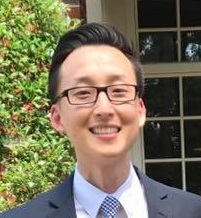

About Me
If I had to describe myself in one word it would be curious. When I was younger and to this very day, I have always had too many interests – too many things I wanted to learn and do. Growing up, I was into photography, video editing, and learning different musical instruments. During college years, I learned how to develop websites using html, css, and flash (is that even used anymore?), which actually had nothing to do with my major.
When I was younger I think I didn't really know how to focus all those interests so I was a bit all over the place. Thankfully, after graduating from Rutgers, I thought more about my life and career path. That's when I got into the education field and have been doing that ever since.
Currently, I run and teach at a tutoring center that a friend and I started in 2012. It's called GO Learning Center. GO is an acronym for Growth and Opportunities. This learning center was my chance to teach the way I wanted and how I wanted. We decided on our motto of growth and opportunities because that's exactly what we wanted to provide for the students. A place to learn, grow, and create more opportunities for their future.
Along with being an educator, I love to build/create things. It can be furniture, videos, legos (aspiring master builder), snowmen, or websites. I think this is why I had an interest in web development in the past and still have that interest now. Although I dabbled in web development years ago, I didn't fully realize the limitless possibilities one could have if he or she knew all the tools and codes that are available these days. So hopefully, through this course I can learn to build dynamic and creative websites.